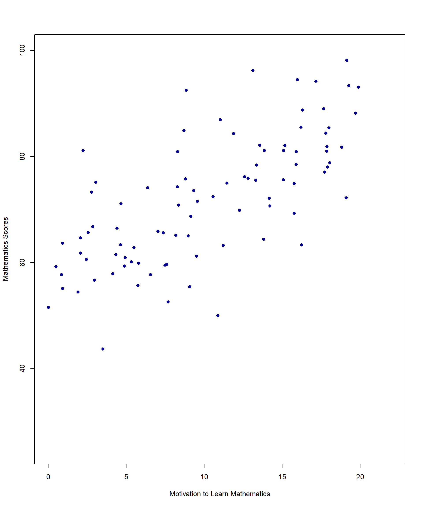
11 Chapter 11
Examining Relationships Between Two Variables
Learning Objectives
By the end of this chapter, you will be able to:
Explain the concept of Pearson’s correlation coefficient (r), including its direction and strength.
Describe and identify the assumptions for correlation analyses.
Identify scenarios where alternatives to Pearson’s r, such as Spearman’s rho or point-biserial correlation, are more appropriate.
Understand when to use a chi-square test for independence and apply it to analyze the relationship between two categorical variables.
Conduct a chi-square test for independence and interpret the results to determine whether there is a significant association between the variables.
The \(t\) test and ANOVA are statistical methods used to compare means, with a foundational understanding of t tests serving as a prerequisite for learning ANOVA. Similarly, this chapter introduces correlation, a key concept that underpins regression analysis. Rather than examining differences between two or more groups on a single dependent variable, we will focus on determining whether two continuous variables are related within a single group of subjects. While several metrics can describe relationships between numeric datasets, this chapter primarily emphasizes measuring the strength and direction of a linear relationship between two continuous variables.
A fundamental concept to understand is that correlation cannot be calculated between just two individual numbers (e.g., one person’s height and weight). Instead, correlation requires two sets of numerical data (e.g., the heights and weights of 50 individuals) to identify patterns. Correlation is fundamentally about detecting these patterns in how two variables are related. While you are already familiar with variance, this chapter introduces covariance—the extent to which two variables change, or vary, together.
11.1 Overview of Correlational Analysis
Imagine a math teacher wants to explore whether students who are more motivated to learn mathematics tend to perform better on their math tests. To investigate this, the teacher collects data from 100 students, measuring:
Motivation to learn math (X-axis) – Students rate their motivation on a scale from 1 to 20.
Math scores (Y-axis) – Final math test scores, ranging from 0 to 100.
A useful starting point when examining potential correlations between two continuous variables is to construct a scatterplot. The scatterplot provides a visual representation of the relationship between the variables, helping to identify patterns or trends. Figure 11.1 provides an example of a scatterplot illustrating the relationship between student motivation to learn mathematics and math scores, based on a random sample of 100 students.
We will use this example to explore the fundamental principles of correlation, including the necessary data assumptions and the limitations of correlation analysis. To begin, we will define what correlation measures.
When discussing correlation, we typically refer to Pearson’s correlation coefficient (\(r\)), which quantifies the linear relationship between two continuous variables. Much like how other sample statistics serve as estimates of population parameters, \(r\) is an estimate of the population correlation coefficient (\(p\)). While statistical software is typically used to compute correlations, understanding the underlying mathematical principles is essential. The following equation provides insight into how correlations are calculated, even if you do not compute them by hand in practice:
\[ r = \frac{\mathrm{Cov}_{XY}}{\sqrt{S_X^2 \, S_Y^2}} \quad \text{or in other words,} \quad r = \frac{\text{covariance of } X \text{ and } Y}{\sqrt{\text{variance of } X \text{ and } Y \text{ separately}}} \]
Don’t get tripped up by the symbols but think about what the equation means. Variance is essentially how much the values of a given variable differ across a sample. If we think about our scatterplot in figure 11.1, the top half of the equation above reflects the extent to which math scores (Y) and motivation (X) vary together (when one goes up, the other goes up). The denominator reflects how much variance there is in each separate variable – do math scores vary quite a bit across all students or only a little? What about motivation?
Imagine two circles, each representing the variance of a variable—one for X (e.g., motivation) and the other for Y (e.g., math scores). Together, these circles contain the total variance in the data. The overlapping area between the circles represents the covariance, which measures how much variance the two variables share.
11.2 How Overlap Affects Correlation
More overlap → The shared variance (numerator of the correlation formula) gets closer to the total variance (denominator), making the correlation coefficient (\(r\)) approach ±1.
Less overlap → The shared variance decreases, and the correlation moves closer to 0.
#| echo: false
#| message: false
#| warning: false
#| fig-align: center
#| fig-width: 10
#| fig-height: 12
#| fig-cap: "Figure 11.2 Variance Unique to X and Y "library(ggplot2)
library(ggforce)
library(patchwork)
make_venn_plot <- function(title_text, overlap_label, add_arrow = FALSE) {
p <- ggplot() +
# Left circle
geom_circle(
aes(x0 = 4.2, y0 = 5, r = 2.7),
fill = "#e78ac3", alpha = 0.75, color = NA
) +
# Right circle
geom_circle(
aes(x0 = 6.8, y0 = 5, r = 2.7),
fill = "#6fa8ef", alpha = 0.75, color = NA
) +
ggtitle(title_text) +
# Labels
annotate("text", x = 2.7, y = 5.0, label = "Unique to X", size = 3.2) +
annotate("text", x = 8.3, y = 5.0, label = "Unique to Y", size = 3.2) +
annotate("text", x = 5.5, y = 5.0, label = overlap_label, size = 3.2) +
annotate("text", x = 3.5, y = 1.4, label = "Variable X", size = 4) +
annotate("text", x = 7.5, y = 1.4, label = "Variable Y", size = 4) +
coord_fixed(xlim = c(0.5, 10.5), ylim = c(1, 8.5)) +
theme_void() +
theme(
plot.title = element_text(hjust = 0.5, size = 12),
plot.background = element_rect(fill = "white", color = "black", linewidth = 0.8)
)
if (add_arrow) {
p <- p +
annotate(
"text",
x = 2.2, y = 6.7,
label = "Minimal Overlap\n(Very Weak Correlation)",
size = 3.3
) +
annotate(
"segment",
x = 3.2, y = 6.1, xend = 4.6, yend = 5,
arrow = arrow(length = unit(0.18, "inches"))
)
}
p
}
p1 <- make_venn_plot(
"Venn Diagram Representing High Correlation",
"Large Overlap\n(High Correlation)"
)
p2 <- make_venn_plot(
"Venn Diagram Representing Very Weak Correlation",
"",
add_arrow = TRUE
)
p1 + p2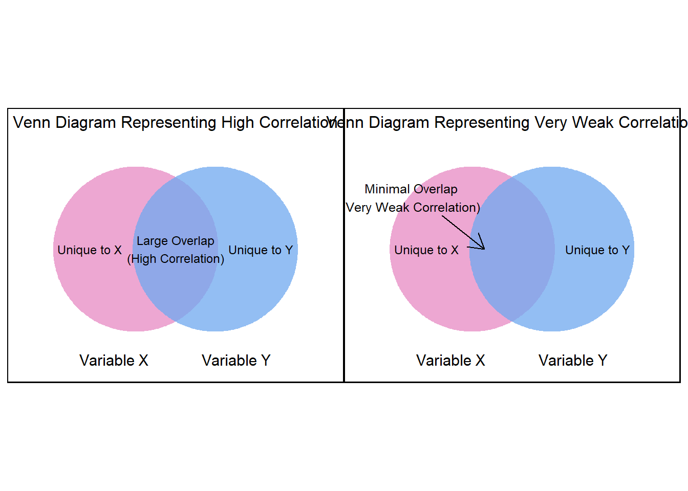
As the two circles start to overlap more and more, this illustrates the numerator of the correlation formula increasing to match the denominator—bringing the correlation closer to ±1. Conversely, when the circles barely overlap, the shared variance is small, and the correlation remains low.
Pearson’s r tells us both the direction of the correlation (as values of X increase, do values of Y increase or decrease?) and the strength of the correlation (if we drew a best-fitting line through the scatterplot, do most points fall very close to the line or are they spread out all over?). As an example, the correlation between math scores and motivation in our dataset is \(r = 0.497\) (\(p < .001\)), which is a moderate, positive correlation. This suggests that as students’ motivation to learn mathematics increases, their math scores also tend to increase.
Pearson’s r ranges from -1 to +1, with these extreme values representing perfect correlations between two variables. A perfect positive or negative correlation means that knowing the value of one variable allows for the exact prediction of the other. For example, the number of hours spent awake and the number of hours spent asleep in a day are perfectly negatively correlated. In educational research, it is extremely rare to observe a perfect correlation, as most relationships between variables involve some degree of variability and external influences. Figures 11.3 and 11.4 show examples of perfect positive and negative correlations, respectively.
#| echo: false
#| message: false
#| warning: false
#| fig-align: center
#| fig-width: 10
#| fig-height: 12
#| fig-cap: "Figure 11.3. Perfect Negative Correlation"
# Create perfectly negatively correlated data
x <- seq(1, 10, by = 1)
y <- rev(x) # perfectly decreasing
# Plot
plot(
x, y,
pch = 16,
col = "blue",
xlab = "X Variable",
ylab = "Y Variable",
xlim = c(0.5, 10.5),
ylim = c(0.5, 10.5)
)
# Add box around plot (like original)
box()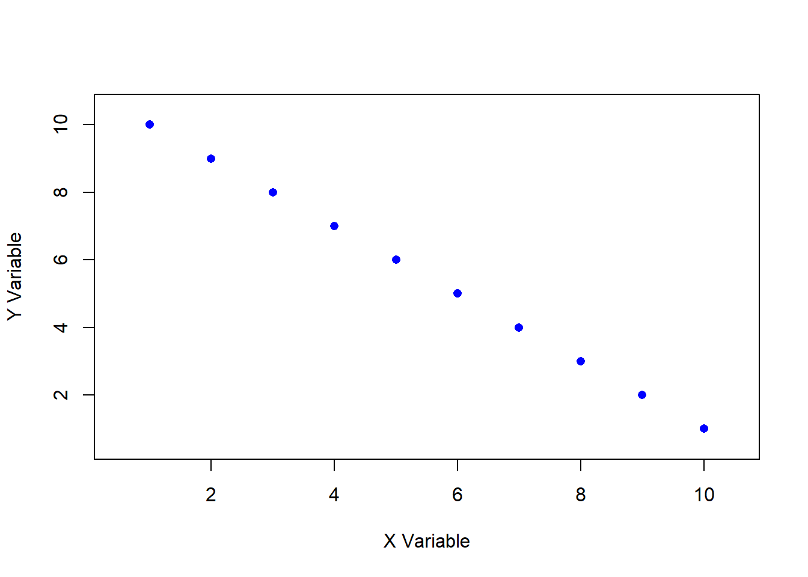
#| echo: false
#| message: false
#| warning: false
#| fig-align: center
#| fig-width: 10
#| fig-height: 12
#| fig-cap: "Figure 11.4. Perfect Negative Correlation"
# Create perfectly positively correlated data
x <- seq(1, 10, by = 1)
y <- x
# Plot
plot(
x, y,
pch = 16,
col = "blue",
xlab = "X Variable",
ylab = "Y Variable",
xlim = c(0.5, 10.5),
ylim = c(0.5, 10.5)
)
# Add box around plot (like original)
box()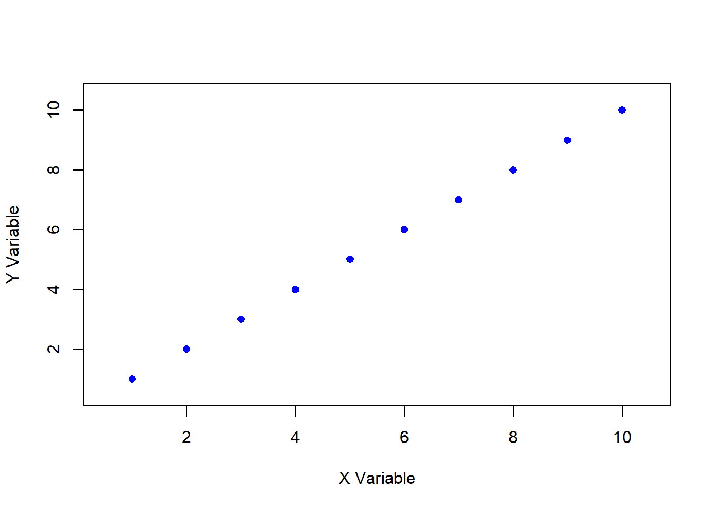
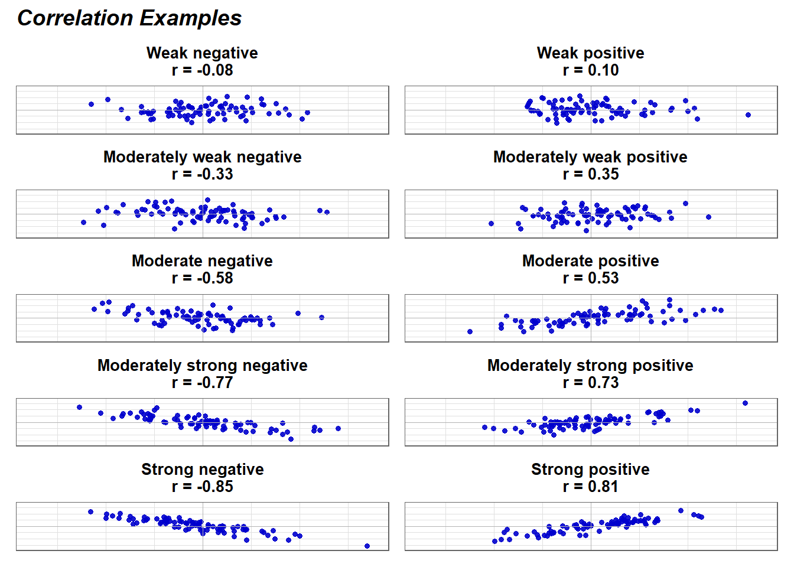
The \(|r|\) values in the left column are the absolute value of the correlations. Therefore, r = -0.1 and r =0.1 are equal in terms of the strength of the relationship. Both would be considered a weak relationship. The interpretation of correlation strength (e.g., weak, moderate, strong) in the far-left column follows conventional guidelines. However, the meaning of a correlation’s magnitude should always be considered in the context of your research.
For example, in fields like education and human behavior, extremely high correlations are rare because multiple factors influence outcomes. A correlation that might be considered moderate in one field could be highly meaningful in another. Therefore, rather than relying solely on standardized thresholds, researchers should interpret correlations based on theoretical expectations, practical significance, and the nature of the variables being studied.
11.3 Data Assumptions for Testing Correlational Analysis
We will use our previous example to illustrate the key data assumptions underlying correlation analysis. Figure 11.6 displays the scatterplot once again, depicting the relationship between student motivation and math achievement scores. This time, we have included a best-fitting line to help visualize the overall trend in the data.
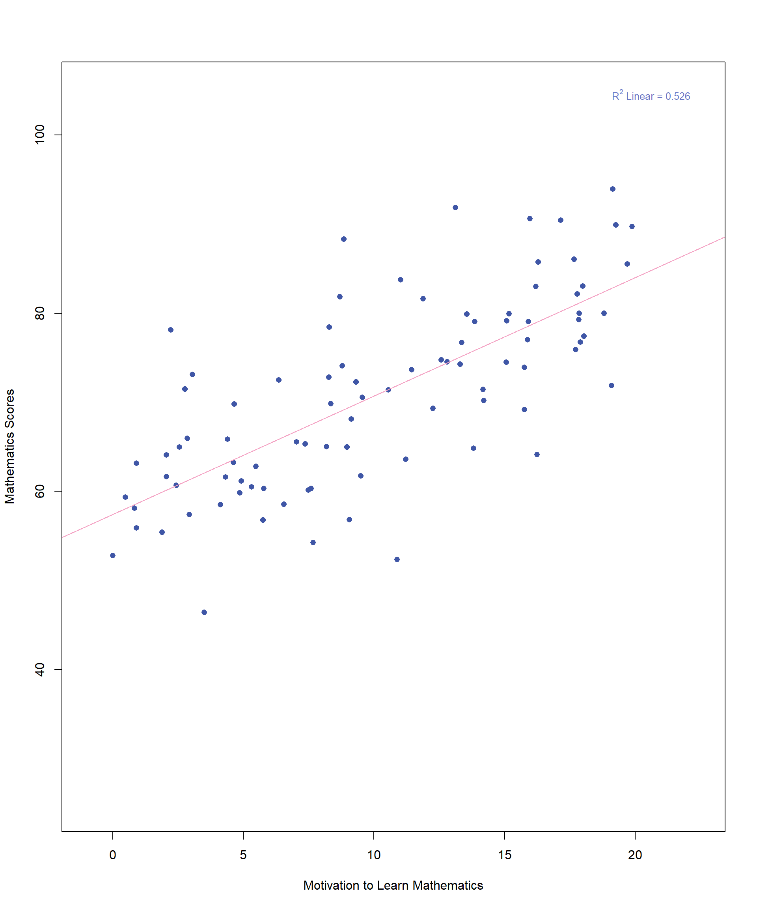
Like other parametric methods, correlation comes with a few key assumptions that need to be met for the results to be reliable. These include linearity, homoscedasticity, and bivariate normality. Let’s take those one at a time.
Linearity is one of the most important assumptions in correlation analysis and the easiest to check with a scatterplot. For correlation—and later, for linear regression, which we will explore in the next chapter—we must determine whether a straight line is the best way to describe the relationship between the two variables, rather than a curved pattern. In figure 11.7, although the data points do not all fall precisely on the line, a linear relationship is evident. Even without the best-fitting line drawn, one could reasonably estimate its approximate placement within the data.
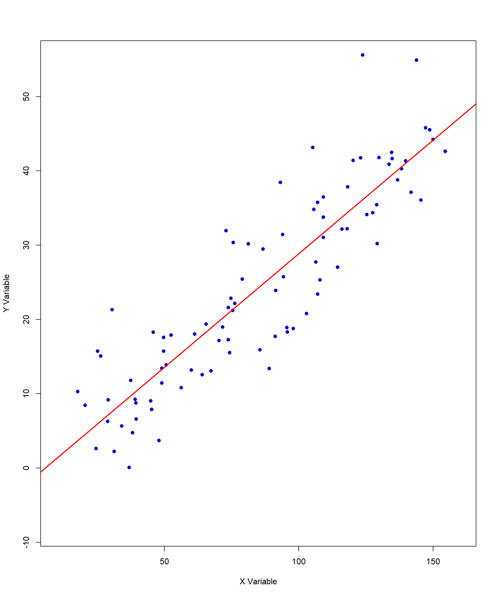
Homoscedasticity is a new addition to your statistics vocabulary. Scedasticity is the extent to which data points are spread out above and below the line. Homoscedasticity means that the spread of points above and below the line is the same along the entire line. We think this might be easiest to understand with an example that violates this assumption.
Imagine you plotted the relationship between family income (X-axis) and how much money a family spent on their spring break vacation (Y-axis). At the lower end of the income scale, spending variation is likely minimal, as financial constraints limit discretionary spending. As a result, the data points would be tightly clustered around the best-fitting line. However, at the higher end of the income scale, spending variation increases—some wealthier families may take extravagant vacations, while others may choose to spend little or nothing. This pattern results in heteroscedasticity, where the spread of data points is not uniform across values of the independent variable. A heteroscedastic scatterplot often resembles a cone, with the wider end appearing in the upper right portion of the plot in this example.
#| echo: false
#| message: false
#| warning: false
#| fig-align: center
#| fig-width: 10
#| fig-height: 12
#| fig-cap: "Figure 11.8. Heteroscedasticity Example"
set.seed(123)
# Generate heteroscedastic data
n <- 100
x <- runif(n, 20, 150)
# increasing variance with x
y <- 0.2 * x + rnorm(n, mean = 0, sd = 2 + 0.08 * x)
# Plot
plot(
x, y,
pch = 16,
col = "blue3",
xlab = "Family Income (in $1000s)",
ylab = "Spring Break Spending (in $1000s)",
xlim = c(15, 160),
ylim = c(-5, 50),
main = "Heteroscedasticity in Family Income vs. Vacation Spending"
)
box()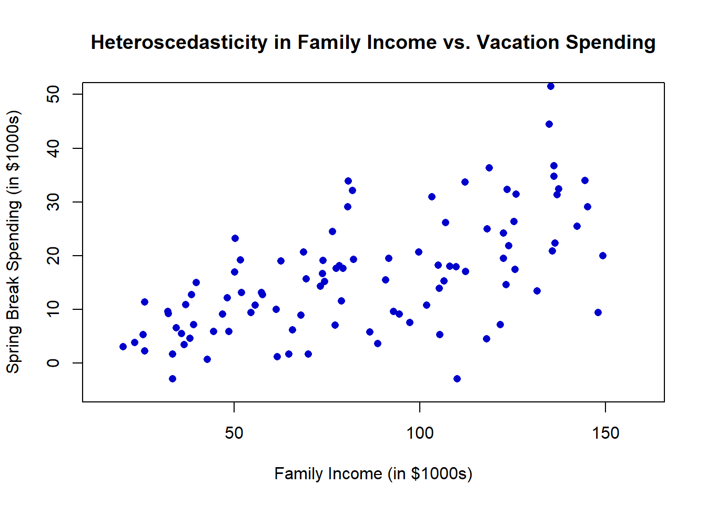
This is important because when we calculate the value of \(r\), we are assuming that it holds true for all values of each variable. If we don’t meet the homoscedasticity assumption, the true correlation is actually lower or higher depending on where we are along the line.
Normality is an assumption you are already familiar with, but it gets a little more complicated with correlation. Start by checking whether each variable is normally distributed. Then we must look at a new concept called bivariate normality. Bivariate normality is an extension of the normal distribution to two dimensions where two variables are jointly distributed in a way that their relationship forms a bivariate normal distribution. Figure 11.9 shows yet another version of the scatterplot with the addition of a sideways normal curve representing the frequency of math scores when motivation is 10.
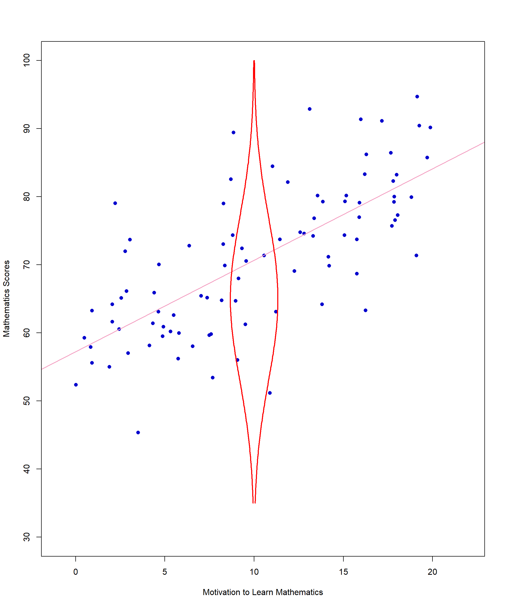
We hope this addition will help you understand a bivariate normal distribution. First, choose one value of X (motivation) – for this example we chose 10. Then look at all values of Y associated with X = 10. When assessing the distribution of Y values at a given X value, it can be helpful to think of looking at the scatterplot from the side. Ideally, the Y values should be normally distributed around a central point for each level of X. In other words, most of the math scores when motivation is approximately 10 should be clustered together in the middle of that distribution. The values that are not close to the middle should be evenly distributed above and below the line.
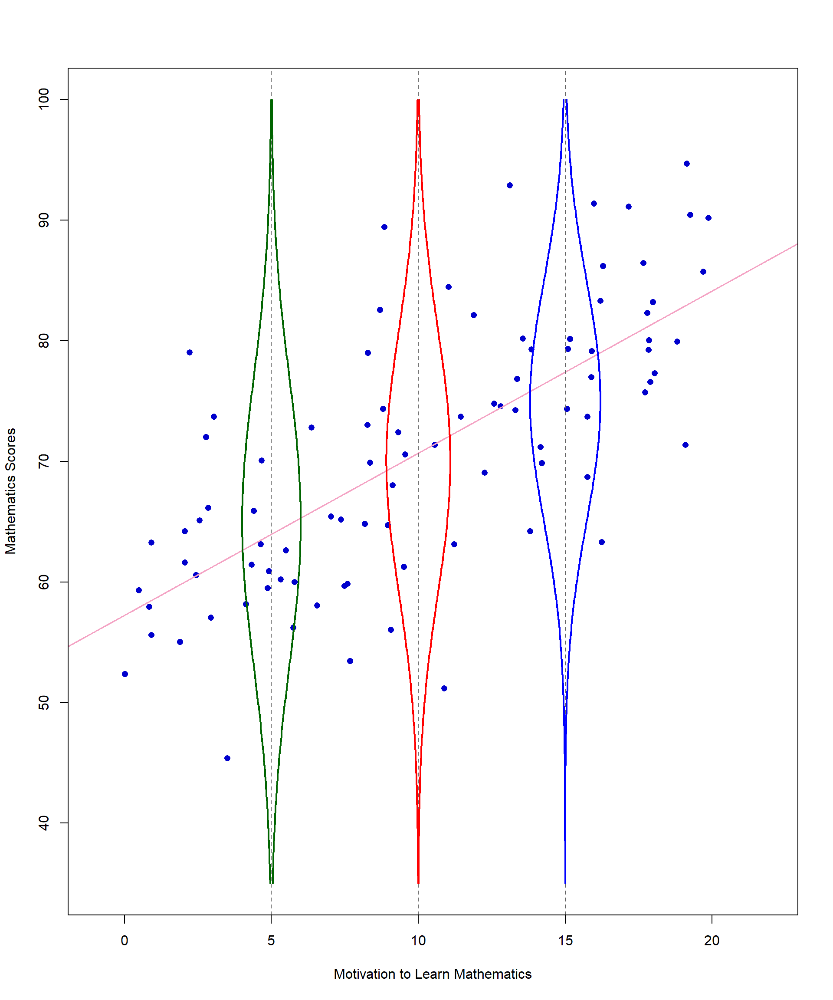
For X = 10, our example looks good in terms of bivariate normality. That is not the case for all points, but there is no major violation of this assumption in our data.
Another issue to be mindful of with normality is that data can sometimes be uniformly distributed, meaning all values are nearly identical or evenly spread across a range. For example, imagine collecting data on the number of school days per week and the number of hours students spend in school each day. Since most schools follow a five-day schedule with roughly the same daily hours, every data point would be nearly identical. This would result in a scatterplot where all points cluster in the same location, making it impossible to establish a meaningful correlation—even though school days and daily hours are logically related. This highlights how a dataset can appear connected in theory but produce a correlation coefficient of 0 due to lack of variability in the data.
11.4 Factors Affecting the Magnitude of Correlations
While checking data assumptions is essential, there are a few additional considerations before conducting a correlational analysis. Even if data meet the assumptions, other factors can still impact the accuracy and interpretability of correlation coefficients. For example, you need to check for outliers. You will also need to make sure you don’t have a problem with range restriction and your sample size needs to be large enough to ensure that r is a stable estimate of the population parameter ρ. Range restriction occurs when the variability of a variable (or variables) in a dataset is artificially limited or constrained, such that the range of values is smaller than it would be in the population. This restriction can significantly impact your results, potentially leading to biased estimates and incorrect conclusions. Now, let’s examine how each of these conditions can impact the correlation estimate one by one.
Outliers can change both the direction and the strength of a correlation. We have included an example below. This example adds an outlier of (X, Y) = (8, 16) to the perfect positive correlation we looked at earlier in the chapter. The pink line indicates the new line of best fit caused by the inclusion of this single outlier. In this example, with the outlier, the correlation estimate decreases, as the outlier disrupts the perfect linear pattern of the original data. With the shift of the regression line, the best-fit model is now a less accurate representation of the data points.
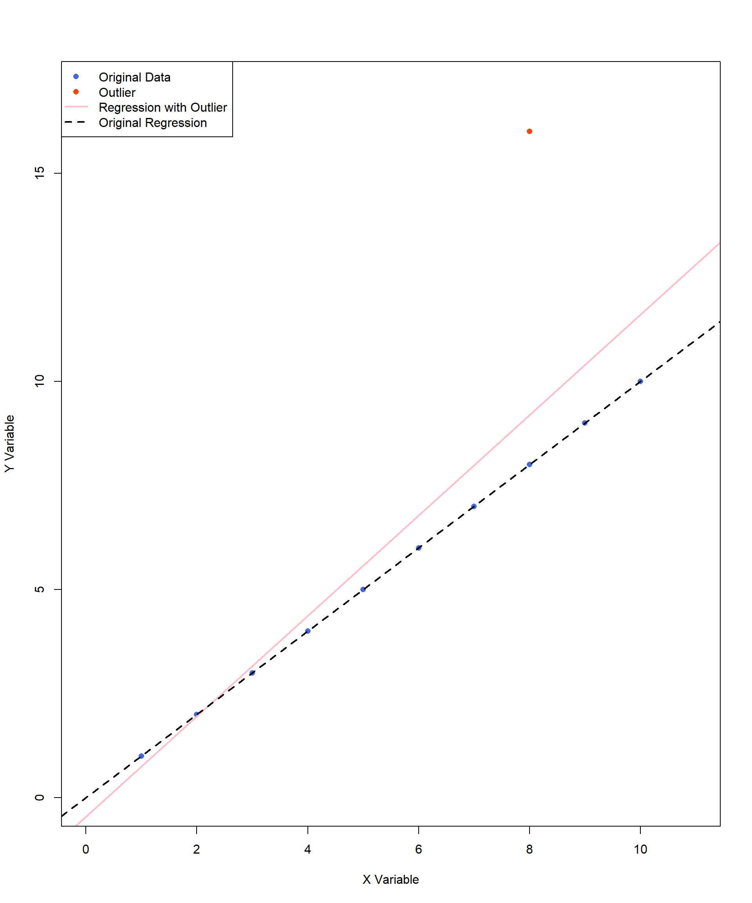
What about the next two graphs?
Figure 11.12 contains an outlier, (X, Y) = (15, 15) as the value is a noticeably larger than the rest of the data points. However, this outlier does not affect the size or direction of the correlation because it aligned perfectly with the original trend. In this case, the outlier follows the same pattern as the rest of the data but represents an extreme value on both variables. Since it maintains the existing relationship, it does not distort the regression line or the correlation estimate.
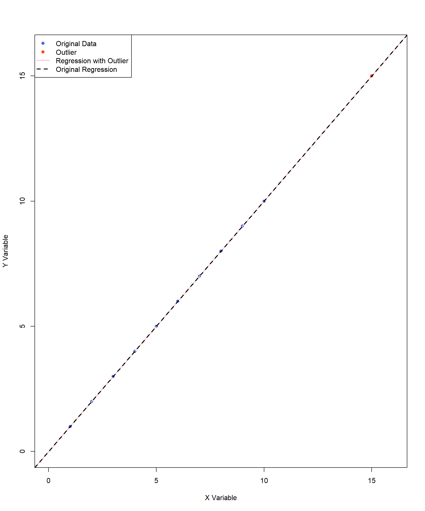
Figure 11.13 contains two outliers but these two are extreme in opposite directions on Y variables. The two outliers at (X, Y) = (9, 17) and (9, 2) do not pull the regression line in any particular direction because they are balanced around the trend. This means the correlation estimate stays about the same, as these points do not change the overall relationship between the two variables. However, these outliers do increase the spread of the data, making the overall variation (variance) larger. Think of it like measuring students’ heights in a classroom—if most students are around the same height but two students are much taller and much shorter, the average height might not change, but the range of heights becomes wider. In statistics, more variance can mean less precise estimates, meaning the correlation might still be accurate, but the confidence in that estimate is lower. This is especially important in smaller datasets, where extreme values can have a bigger impact on the results.
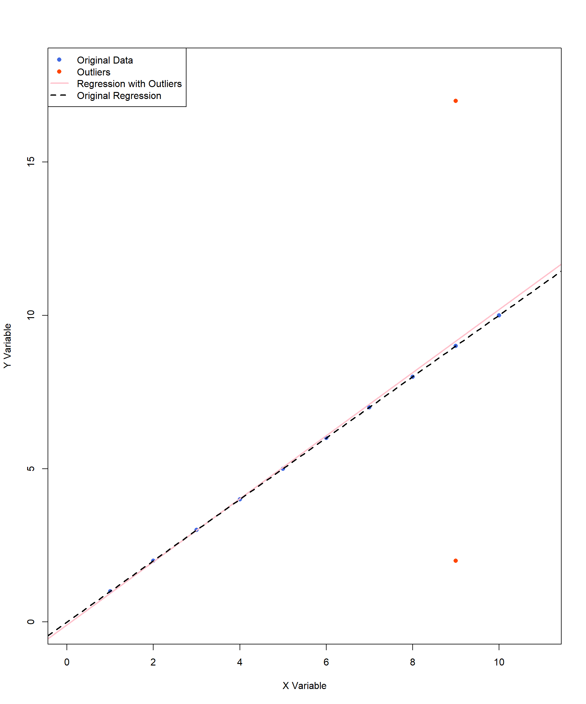
The prior graphs illustrate different types of outliers and their effects on correlation and regression lines. In the first case, a single influential outlier can noticeably shift the pink regression line, altering the best-fit model and reducing the strength of the correlation. In contrast, the second and third graphs feature outliers that are not influencing the regression line, keeping the best-fit line close to its original form. However, the outliers may influence the interpretation, variance, or their estimation precisions. These examples emphasize the importance of visually inspecting data before interpreting correlation results.
A scatterplot provides immediate insight into whether an outlier is truly problematic or simply a natural variation in the data. Without visual inspection, researchers might overlook influential outliers that distort results. With graphical analysis, we can make more informed decisions about how to handle outliers and ensure that correlation estimates are accurate and meaningful.
Range restriction is a trickier concept to understand. When interpreting a correlation, it is important to not make assumptions outside of the observed range. This becomes a problem if your data only represent a smaller range of a variable compared to the whole population. For example, there is probably a strong, positive correlation between height and reading ability if we are only studying children ages 4 to 8. However, that does not mean we can conclude anything about a relationship between height and reading ability among adults. The 8-year-old students are simply taller, on average, than 4-year-old students due to normal growth rates among children.
However, this concept has real implications for the kind of analyses you conduct. Imagine if all college students took the Law School Admission Test (LSAT), and we looked for a correlation between final college GPA and LSAT scores. There would not be a perfect correlation, but you can imagine there would be some kind of positive association between the two variables: generally, as GPAs increase, LSAT scores also increase.
We are now going to restrict the range. Instead of looking at GPAs and LSAT scores for all college students, let’s only look at the group of students who were admitted to a highly prestigious and selective law school. Of course, a top school is going to require very high GPAs and very high LSAT scores. But for any given admitted student, a slight weakness in one area might be balanced out if another metric is very strong. This could result in students whose LSAT scores are not the highest still being admitted if they have a strong GPA, and vice versa. But if you plot those values out, do you know what you will see? A negative correlation between GPA and LSAT scores. When we restrict the sample to only the highest end of the range for both variables, the correlation doesn’t just get weaker, it changes direction.
Here are some other examples of how range restriction can impact correlation in education research:
The relationship between college entrance scores and GPA among Honors College students may appear weak because only high-achieving students are admitted, limiting the variability in both scores.
The relationship between teacher experience and student achievement may appear weaker in a study conducted within a district that only hires teachers with at least five years of experience. Because the sample excludes novice teachers, the variability in teaching experience is restricted, potentially underestimating the true correlation.
The last factor to consider is sample size. There are no hard and fast rule for sample size with a correlation analysis. However, you cannot be confident that your sample is a good estimate of the population with a small sample. This is closely connected to how we test correlations for significance.
11.5 Statistical Significance of Correlations
Step 1: Determine the null and alternative hypotheses.
You can find the correlation between any two sets of continuous variables, but the result may not be statistically or practically significant. We can conduct hypotheses tests with correlational analysis just like with t tests. Let’s go through the steps, just as we did for t tests and ANOVAs, using the math test and motivation example.
The null hypothesis is that there is no correlation in the population, and the alternative hypothesis is that there is some correlation.
\[ H_0: ρ = 0 \]
\[ H_A: ρ \ne 0 \]
In our example, the null and alternative hypotheses are:
\(H_0: ρ = 0\) there is NO correlation between math scores and students’ motivation to learn math
\(H_A: ρ \ne 0\)(there IS a correlation between math scores and students’ motivation to learn math)
Step 2: Set the criteria for a decision.
To set the criteria for a decision, let’s choose our alpha level at \(\alpha = 0.05\) for this two-tailed test, and find the critical values. We need to know degrees of freedom, which for tests involving Pearson’s r is calculated by N – 2, where N is the number of cases used for calculating the correlation. In our example \(df = 100 - 2 = 98\).
Step 3: Check assumptions and compute the test statistic.
We reviewed the scatterplot and observed no violation of assumptions to move forward with our statistical test. The test statistic is simply the value of r that we obtained from sample data. We show the formula of Pearson’s r, but we will not show how to calculate it here because you will use statistical software in practice. From our analysis, Pearson’s correlation between math score and motivation rating score is \(r =.497\) with \(df = 98\).
Step 4: Find the \(p\) value, draw a conclusion, and report your conclusion.
Then we turn to the Critical Values for Pearson Correlation table at the back of the book, find the column representing \(\alpha = 0.05\) for a two-tailed test, and look down to the line corresponding with the correct degrees of freedom. If the observed \(r\) statistic (.497) is higher than what you find in the table, then it is considered statistically significant at \(p < 0.05\). As you can see, there is a straightforward relationship between the strength of the correlation (positive or negative) and sample size, in terms of what is considered significant. For a smaller sample size, the correlation needs to be stronger to be significant. Since the table does not include the critical \(r\) value for \(df = 98\), we refer to the closest available values:
\(df = 90\) → critical \(r = .205\)
\(df = 100\) → critical \(r = .195\)
Thus, the critical r value for df = 98 falls somewhere between .195 and .205. Since our observed correlation (𝑟 = 0.497) is greater than both values, we can conclude our p value is smaller than 0.05, meaning that there is a statistically significant correlation between math test scores and motivation ratings.
APA sample write-up: A Pearson correlation analysis was conducted to examine the relationship between motivation to learn mathematics and mathematics test scores. The results revealed a statistically significant positive moderate correlation between motivation and math scores, \(r(98) = 0.497\), \(p < .05\). This suggests that as motivation increases, math scores tend to increase as well.
11.6 Practical Significance of Correlations
That brings us to practical significance, otherwise known as effect size. For Pearson’s r, instead of using Cohen’s d to measure effect size, we use something called the coefficient of determination, which is mathematically the same as a concept we already touched on with eta-squared, proportion of variance. The coefficient of determination indicates the proportion of the variance in the dependent variable that is explained by the independent variable. The calculation is very simple:
\[ coefficient \, of \, determination = r^2 \]
While \(r\) (the correlation coefficient) can be positive or negative, \(r^2\) is always positive. Going back to our original example before removing outliers, we can calculate the coefficient of determination:
\[ r^2= (0.497)^22 = 0.247 \]
You interpret this value by saying that 25% of the variance in math scores can be explained (not caused!) by changes in motivation to learn. You will find that \(r^2\) is important when we are evaluating the practical significance of regression equations, which we will learn later in the book.
11.7 Alternatives to Pearson’s r
While we will not go into great detail, there are alternatives to Pearson’s r that may be helpful to your future research.
Spearman’s Rank-Order Correlation (\(r_s\))
Spearman rank-order correlation coefficient (\(r_s\)), also known as Spearman’s rho, measures the relationship between two ranked (ordinal) variables. This method is appropriate when the data are measured on an ordinal scale, such as responses on a Likert-type scale (e.g., Strongly Agree to Strongly Disagree). Like Pearson’s correlation, \(r_s\) ranges from -1 to +1, where values closer to -1 or +1 indicate stronger monotonic relationships.
Point-Biserial Correlation (\(r_{pb}\))
Point-Biserial Correlation (\(r_{pb}\)) is used to measure the relationship between a continuous variable (e.g., motivation to learn math, achievement scores) and a dichotomous variable (e.g., Pass/Fail, Enrolled/Not Enrolled, Full-Time/Part-Time). In education research, point-biserial correlation is particularly useful for examining whether higher achievement scores predict course completion or whether students with greater motivation are more likely to enroll in advanced courses.
11.8 Final Remarks on Correlation
We are sure you have heard the phrase “correlation does not equal causation.” Now it is time to remind yourself of that. Statistical software packages can calculate the correlation between any two sets of numeric variables, but they cannot tell you if one variable caused the other - no matter how high the correlation coefficient. Instead, they simply tell you if there is a relationship between two variables. However, when interpreting correlation, it is important to consider other factors that might influence the relationship. Sometimes, a third variable may be driving the observed association between two variables, making it appear as though they are directly related when they are not.
This brings us the concept of a confounding variable, or third variable - an extraneous variable that was not accounted for but influences both variables of interest, leading to a “confounded” result.
Consider the following example: A researcher investigates whether there is a correlation between ice cream consumption and drowning incidents. The data reveal a positive correlation—when ice cream consumption increases, so do drowning cases. Does this mean that ice cream consumption causes drownings? Should policymakers consider banning ice cream to improve public safety? Of course not. The underlying confounding variable in this case is temperature—warmer weather leads to both increased ice cream consumption and more people swimming, which in turn raises the risk of drowning. This example illustrates why identifying potential confounding variables is critical when interpreting correlation results.
When discussing correlation, it is essential to describe how changes in one variable are associated with changes in another, rather than implying causation. Avoid phrases such as ‘the effect of Variable X on Variable Y’ or statements suggesting that one variable affects or influences another. Instead, use precise language, stating that variables are correlated or associated with each other. This distinction is critical, as correlation alone does not establish a cause-and-effect relationship.
Finally, while correlation provides information about the direction and strength of a relationship, it does not determine the exact slope of the best-fitting line. In other words, we can conclude that math scores and motivation are correlated, but we cannot infer how much math scores typically increase for every one-point increase in motivation. The correlation coefficient (r) only tells us the direction of the relationship (positive or negative) and how tightly the individual values cluster around the line—it does not quantify the rate of change between the two variables.
It is important to note that the slope of the best-fitting line is independent of the strength of the correlation. A steep line can still correspond to a weak correlation, while a nearly flat line can reflect a strong correlation. Correlation simply describes the direction and degree of association between two variables—it does not allow for precise predictions. If you want to determine the slope and use one variable to predict another, stay tuned for the upcoming discussion on regression analysis.
11.9 Chi-Square Test for Independence
A chi-square test for independence is a statistical test used to determine whether there is a significant association between two categorical variables.
When learning about independent-samples \(t\) tests or correlations, a common misconception is that you can analyze just two numbers rather than two sets of numbers. However, comparing two means without additional context is not statistically meaningful. To determine whether differences between means are significant, you need to account for the spread of the data (variance) and the number of observations (N). The same principle applies to correlation—you cannot determine whether two values are correlated in isolation. Instead, you need two sets of numbers to estimate variance and covariance, which are essential for assessing the strength and direction of a relationship.
In contrast, chi-square tests allow you to analyze relationships without requiring individual raw data points. In a chi-square test for independence, you compare observed values to expected values, where the expected values are calculated from the sample data itself rather than being predetermined.
Because the chi-square test for independence examines the relationship between two categorical variables, it can be used as an alternative to a correlation or the independent-samples t test. When using it, you should clearly define a dependent variable and an independent variable to inform your conclusions from the analysis. For example, say you want to check the effectiveness of a persuasive video on whether college athletes should be paid. Your independent variable shows if individuals watched the video or not, and your dependent variable is a dichotomous variable indicating agreement or disagreement with a statement in favor of paying college athletes.
If you had an entire dataset with individual responses, you could use statistical software packages to run a chi-square. However, what if all you had was the following summary table?
| Support paying college athletes: Yes | Support paying college athletes: No | |
|---|---|---|
| Watched video: Yes | 18 | 3 |
| Watched video: No | 12 | 11 |
There are a few important assumptions for this test, just like other chi-square tests:
Random sampling: Each independent variable is drawn from a random sample.
Independence of observations: The outcome for one individual does not influence the outcome for another.
Mutually exclusive categories: Each observation belongs to one, and only one, category within the contingency table.
Since all assumptions are met, we went ahead and entered the information into a statistical software package and found that \(\chi^2 (1) = 5.692, \, p = 0.017\). There is an association between watching the video and support for paying college athletes. The Phi coefficient, which represents practical significance, was 0.36, indicating a medium effect size.
Let’s take a minute to understand how we would calculate the outcome by hand. First, we must calculate the expected frequencies for each cell. To do this:
Calculate the total for each of the rows and columns by simply adding them together.
For each cell, compute the following:
\[ f_e = \frac{row \, total\, \times \,column \, total}{N} \]
\(N\) equals the total number of participants. The following table shows you how to calculate these values for our example.
| Support: Yes | Support: No | Total | |
|---|---|---|---|
| Watched video: Yes | \(\frac{21 \times 30}{44} = 14.3\) | \(\frac{21 \times 14}{44} = 6.7\) | \(18 + 3 = 21\) |
| Watched video: No | \(\frac{23 \times 30}{44} = 15.7\) | \(\frac{23 \times 14}{44} = 7.3\) | \(12 + 11 = 23\) |
| Total | \(18 + 12 = 30\) | \(3 + 11 = 14\) | \(18 + 12 + 11 + 3 = 44\) |
The degrees of freedom are calculated by multiplying the degrees of freedom for each categorical value: \(df = (r−1)\times(c−1)\), where \(r\) = number of rows (categories of one variable) and \(c\) = number of columns (categories of the other variable). Each of the variables in our example has 1 degree of freedom \((2 - 1) = 1\) and \((2 - 1) = 1\). We then multiple them together for 1 total degree of freedom.
Next, we need to calculate the test statistic. The test statistic is calculated by:
\[ \chi^2 = \sum \frac{(f_o - f_e)^2}{f_e} \]
\[ \chi^2 = \frac{(18 - 14.3)^2}{14.3} + \frac{(3 - 6.7)^2}{6.7} + \frac{(12 - 15.7)^2}{15.7} + \frac{(11 - 7.3)^2}{7.3} \]
\[ \chi^2 = 0.96 + 2.04 + 0.87 + 1.88 \]
\[ \chi^2 = 5.75 \]
Our hand-calculated value is very close to the value calculated by statistical software. Comparing the obtained value to the Critical Values of Chi-Square table at the end of the book tells us that the p value falls somewhere between .05 and .01 since 5.75 falls between 3.84 and 6.64. Figure 11.14 shows that a χ2 value of 5.75 exceeds the critical value and falls in the rejection region.
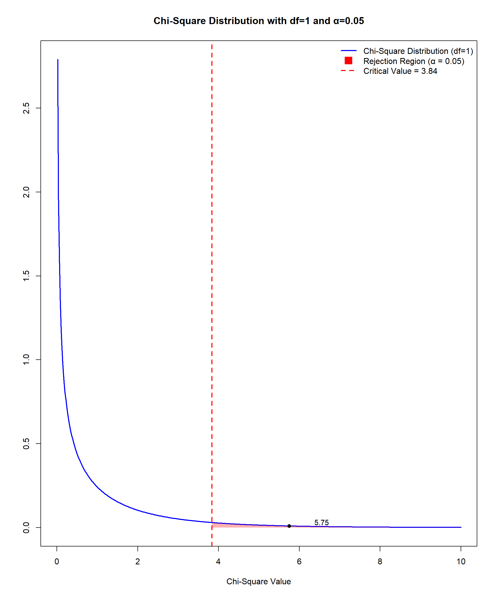
There are two key limitations to consider when utilizing chi-square tests. First, large sample sizes can make trivial associations statistically significant. Small differences between observed (O) and expected (\(E\)) frequencies are magnified because the test statistic aggregates these differences across all cells. Second, Cochran (1954) explicitly stated that a minimum expected frequency of 5 is a reasonable threshold for the validity of the chi-square approximation in most practical cases because this helps ensure the validity of the test’s results, particularly the accuracy of the p values. If expected cell frequencies are consistently below 5, alternative methods like Fisher’s Exact Test should be used.
Examining Relationships Between Two Variables in R
In this section, we demonstrate how to implement several methods from this Chapter in R. We start with Pearson’s correlation for two continuous variables, then illustrate alternatives when data are ordinal or involve a dichotomous variable, and finish with a chi-square test for independence between two categorical variables.
# packages used below
library(haven)
library(dplyr)
library(ggplot2)
library(psych) # descriptive stats, point-biserial (optional)
library(GGally) # quick scatterplots/diagnostics
library(lsr) # Cramer's V
data <- read_sav("chapter6/chapter6data.sav") 1 Pearson’s Correlation
Here, we examine the relationship between students’ Reasoning scores (PV1MPRE) and Change & Relationships scores (PV1MCCR), two mathematics sub-area scores from PISA reflecting different cognitive domains.
1.1 Visual Check of Assumptions
1.1.1 Linearity: Scatterplot
# scatter + smooth line and linear fit
ggplot(data, aes(PV1MPRE, PV1MCCR)) +
geom_point(alpha = .3) +
geom_smooth(method = "lm", se = FALSE, linewidth = .8) + # regression line (solid)
geom_smooth(se = FALSE, linetype = 2) + # loess trend (dashed) to spot nonlinearity
labs(x = "Math Reasoning (PV1MPRE)", y = "Change & Relationships (PV1MCCR)",
title = "Scatterplot with Linear Fit (solid) and LOESS (dashed)") 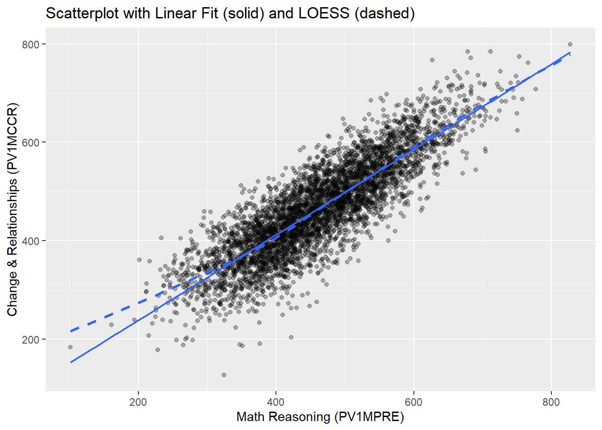
In this scatter plot, The solid line represents the fitted linear regression line (to be introduced in Chapter 12), while the dashed line represents the LOESS curve, which flexibly captures any nonlinear patterns.
Overall, the relationship between the two math scores appears strongly linear: the points are well distributed around the straight line, and the LOESS curve closely follows the linear fit across most of the score range. At the lower end of the score distribution (roughly 100–300), the LOESS curve lies slightly above the linear fit, suggesting a mild upward deviation from strict linearity in that range.
However, given the large sample size and the relatively small departure, the linearity assumption is considered reasonably satisfied, and Pearson’s correlation remains appropriate for quantifying the association.
1.1.2 Homoscedasticity: Residuals vs Fitted plot
Residual plots from a simple linear regression model help confirm homoscedasticity.
m <- lm(PV1MCCR ~ PV1MPRE, data = data) # fit a linear regression model
plot(m, which = 1) #which = 1 indicates the 1st diagnostic plot: Residuals vs Fitted 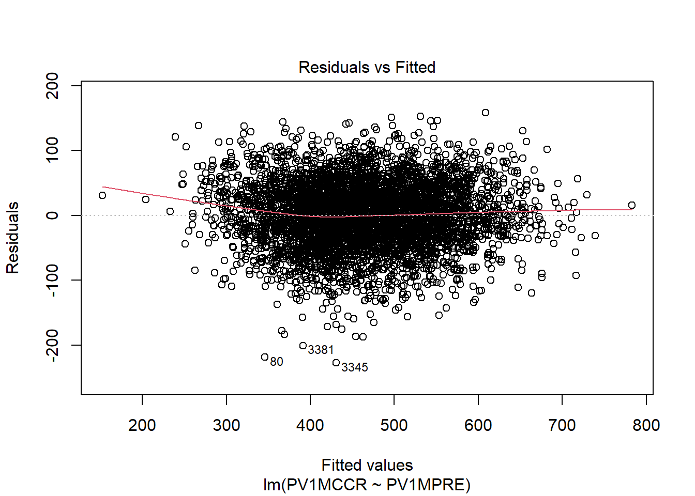
The residuals appear to be fairly evenly scattered around zero across the entire range of fitted values, without forming a clear funnel shape or systematic curve. A few points are marked with observation numbers (e.g., 80, 3381, 3345), which are likely mild outliers. However, they are not extreme enough to indicate severe heteroscedasticity (i.e., unequal variance of residuals). Overall, this indicates that the variance of the residuals is approximately constant, meaning the homoscedasticity assumption is reasonably satisfied.
1.1.3 Normality: Q–Q plots
Q–Q plots check the approximate normality of each variable.
qqnorm(data$PV1MPRE, main = "Q-Q Plot: Math - Reasoning"); qqline(data$PV1MPRE) 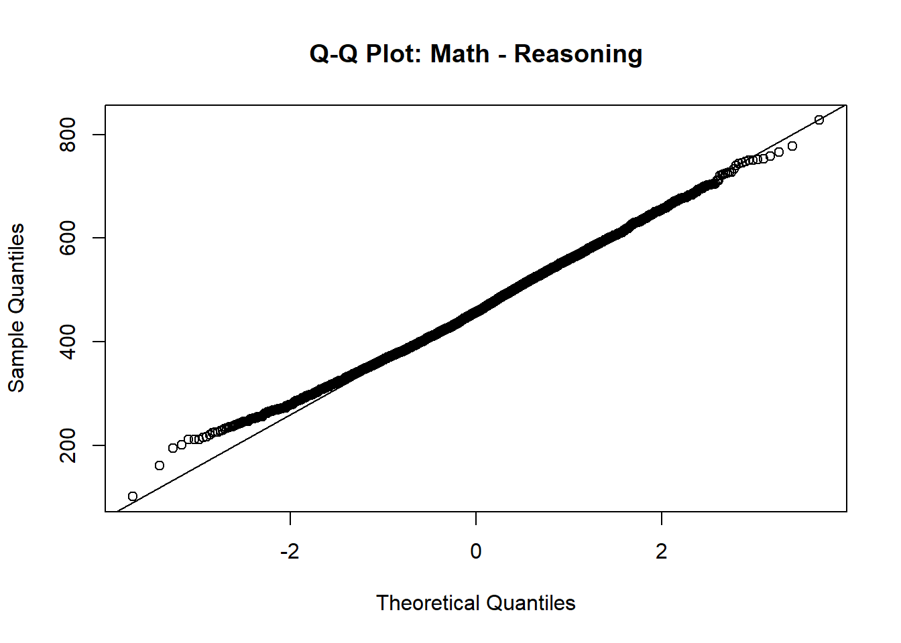
qqnorm(data$PV1MCCR, main = "Q-Q Plot: Math - Change & Relationships");
qqline(data$PV1MCCR) 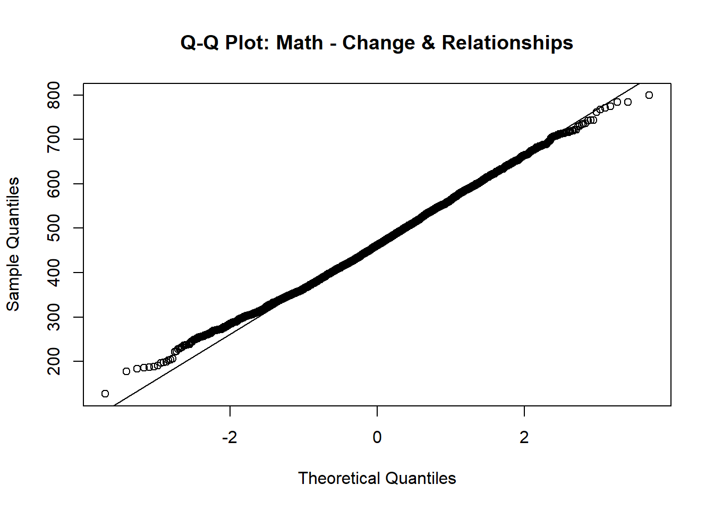
In both plots, the points largely follow the 45-degree reference line, with only slight deviations at the extreme tails. This indicates that both variables are approximately normally distributed.
Although the chapter mentions checking bivariate normality (the joint normal distribution of the two variables), examining the marginal normality of each variable is often a practical and informative first step. If both variables are roughly normally distributed individually and the scatterplot of their relationship appears linear (as we already checked), this generally supports the assumption of bivariate normality . Together, these results justify the use of Pearson correlation to examine the linear relationship between these two math sub-area scores.
1.2 Computing Pearson’s r
pear <- cor.test(data$PV1MPRE, data$PV1MCCR,
use = "pairwise.complete.obs") # pairwise deletion of missing
pear$estimate # correlation coefficient r cor
0.852135 pear$p.value # p-value [1] 0pear$estimate^2 # r-squared cor
0.7261341 Strength and Direction of Association: The Pearson correlation coefficient is \(r=.852\), indicating a very strong positive linear relationship between Math Reasoning and Math Change & Relationships scores. In practical terms, students who score higher in reasoning also tend to score higher in change & relationships.
Statistical Significance: \(p<.001\), meaning the observed correlation is highly statistically significant. We can reject the null hypothesis of no linear association between the two sub-scores.
Variance Explained: The squared correlation is \(r^2=.726\), which means that about 72.6% of the variance in Change & Relationships scores can be explained by Math Reasoning scores (and vice versa). This indicates a very large effect size and strong shared variability between the two sub-areas.
2 Spearman’s Correlation
When variables are ordinal, Spearman’s \(r_s\) is preferred. Here, we convert the two math subscores into quartiles (1–4) and compute Spearman’s correlation.
q_dat <- data %>%
mutate( # create quartile variables
pre_q = ntile(PV1MPRE, 4), # quartiles of Reasoning
mccr_q = ntile(PV1MCCR, 4) # quartiles of Change & Relationships
)
head(q_dat[, c("PV1MPRE", "pre_q", "PV1MCCR", "mccr_q")]) # view new variables # A tibble: 6 × 4
PV1MPRE pre_q PV1MCCR mccr_q
<dbl> <int> <dbl> <int>
1 558. 4 530. 3
2 477. 3 398. 2
3 636. 4 622. 4
4 467. 3 483. 3
5 448. 2 553. 4
6 420. 2 453. 2spear <- cor.test(q_dat$pre_q, q_dat$mccr_q, method = "spearman",
exact = FALSE, #large sample approximation, preferred for n > 1000
use = "pairwise.complete.obs")
spear$estimate rho
0.7987698 spear$p.value [1] 0The Spearman’s Rank-Order correlation (\(r_s = .799, \, p < .001\)) indicates a strong positive monotonic relationship between Math Reasoning and Change & Relationships after converting the scores into quartiles. This means that as students’ quartile ranking on reasoning increases, their quartile ranking on change & relationships tends to increase as well.
Compared with the Pearson correlation (\(r=.852\)), the Spearman’s \(r_s\) is slightly lower. This is expected because transforming continuous scores into quartiles removes some of the fine-grained variability in the data, retaining only the relative rank order. As a result, Spearman’s \(r_s\) captures the ordinal association but ignores within-quartile differences, leading to a slightly attenuated correlation coefficient.
3 Point-Biserial Correlation
Point-biserial correlation measures the relationship between a continuous variable and a dichotomous variable. Here we examine whether students who perceive mathematics as easier than other subjects (MATHEASE: 0 = No, 1 = Yes) have higher overall math scores (PV1MATH).
pb <- cor.test(as.numeric(data$MATHEASE), #ensure dichotomous variable is numeric
data$PV1MATH,
use = "pairwise.complete.obs")
pb$estimate cor
0.108101 pb$p.value [1] 7.224194e-12The point-biserial correlation between perception of mathematics as easier than other subjects and overall math score is \(r_{pb} = .108\), with \(p<.001\). This result indicates a significantly positive but small association between perceiving mathematics as easier and actual math performance: students who report finding mathematics easier tend to score slightly higher on average.
4 Chi-Square Test for Independence
When both variables are categorical, we use a chi-square test to evaluate independence. Here, we examine the relationship between Gender (ST004D01T, where 1 = Female and 2 = Male) and Math Motivation (MATHMOT, where 0 = Not more motivated to do well in mathematics than other subjects and 1 = More motivated to do well in mathematics than other subjects).
The contingency table shows the frequency of students’ motivation to do well in mathematics broken down by gender. The Chi-squared test yielded \(\chi^2(1)=23.12, \, p<.001\), so we reject the null hypothesis of independence. This means there is a statistically significant association between gender and motivation to do well in mathematics.
From the contingency table, male students have a higher proportion of reporting being more motivated to do well in mathematics compared to female students. This finding suggests that motivation to do well in mathematics may vary by gender, which could have implications for educational interventions or further research.
Conclusion
This chapter highlights the critical role of statistical tools in understanding relationships between variables, with particular emphasis on correlational analyses and their limitations. Pearson’s correlation coefficient (\(r\)) is foundational for assessing the direction and strength of associations, ranging from -1 to +1. Scatterplots and key assumptions such as linearity, homoscedasticity, and bivariate normality ensure meaningful and valid interpretations. Practical significance is illustrated through the coefficient of determination (\(r^2\)), which quantifies the variance in the dependent variable explained by the independent variable.
Furthermore, the chapter introduces the chi-square test for independence, which serves as a robust method for analyzing associations between two categorical variables. Unlike correlation or independent-samples t tests, the chi-square test allows researchers to examine associations using summary statistics without requiring the underlying dataset.
The discussion on limitations underscores the importance of recognizing outliers, range restriction, and sample size, which can significantly influence the results of correlational or chi-square analyses. Together, these tools provide complementary approaches to exploring relationships, reinforcing the distinction between correlation and causation, and preparing researchers for advanced techniques such as regression.
Key Takeaways for Educational Researchers from Chapter 11
Correlation measures association, not causation. Pearson’s correlation coefficient (r) quantifies the strength and direction of a linear relationship between two continuous variables, but it does not imply that one variable causes the other. Researchers must avoid causal language and instead focus on interpreting the relationship as an association.
Checking assumptions is crucial. Reliable correlation analyses require meeting key assumptions such as linearity, homoscedasticity, and bivariate normality. A scatterplot is an essential tool for visually inspecting these assumptions before running statistical tests.
Outliers, range restriction, and sample size impact correlation. Extreme values can distort correlation estimates, while a limited range of data (e.g., only studying high-achieving students) may weaken or even reverse a correlation. A larger, more representative sample would provide a more accurate estimate of the relationship.
Chi-square tests for independence analyze categorical relationships – Unlike correlation, a Chi-square test for independence is used to examine whether two categorical variables are significantly associated. It can be an alternative to correlation when dealing with dichotomous or multi-category variables. This method allows researchers to assess whether an observed association is statistically significant, helping policymakers and educators determine whether interventions like different types of intervention programs are effective.
Statistical significance does not always imply practical significance – Even a small correlation can be statistically significant in large datasets, but effect size measures like \(r^2\), the coefficient of determination, help determine how meaningful the relationship is in real-world educational settings.
Key Definitions from Chapter 11
Bivariate normality is an extension of the normal distribution to two dimensions where two variables are jointly distributed in a way that their relationship forms a bivariate normal distribution.
A chi-square test for independence is a statistical test used to determine whether there is a significant association between two categorical variables.
The coefficient of determination (\(r^2\)) indicates the proportion of the variance in the dependent variable that is explained by the independent variable.
A confounding variable, or third variable, is an extraneous variable that was not controlled for and is the reason a particular “confounded” result is observed.
Covariance describes the extent to which two variables change (or vary) together.
Heteroscedasticity means that the spread of data points is not uniform across values of the independent variable. A heteroscedastic scatterplot often resembles a cone.
Homoscedasticity means that the spread of points above and below a line of best fit is the same along the entire line.
Linearity is the assumption that a straight line is the best way to describe a dataset instead of some type of curve.
Pearson’s correlation coefficient (\(r\)) is an estimate of the population correlation \(\rho\). It tells us the direction and the strength of the correlation.
Point-biserial correlation coefficient (\(r_{pb}\)) is used to measure the relationship between a continuous variable (e.g., motivation to learn math, achievement scores) and a dichotomous variable (e.g., Pass/Fail, Enrolled/Not Enrolled, Full-Time/Part-Time).
Range restriction occurs when the variability of a variable (or variables) in a dataset is artificially limited or constrained, such that the range of values is smaller than it would be in the population. This restriction can significantly impact your results, potentially leading to biased estimates and incorrect conclusions.
Scedasticity is the extent to which data points are spread out above and below the line.
Spearman rank-order correlation coefficient (\(r_s\)), also known as Spearman’s rho, measures the relationship between two ranked (ordinal) variables
Check Your Understanding
What is the main purpose of Pearson’s correlation coefficient (\(r\)) in correlational analysis?
To compare means across groups
To measure the extent of causation between two variables
To measure the direction and strength of a relationship between two variables
To test for the significance of regression equations
Which of the following is NOT an assumption of correlational analysis?
Linearity
Homoscedasticity
Causality
Normality
What does a Pearson’s \(r\) value of 0 indicate?
A strong positive correlation
No correlation
A strong negative correlation
A perfect correlation
Which statistical method is used when investigating a relationship between a continuous variable and a dichotomous variable?
Pearson’s \(r\)
Spearman’s rho
Point-biserial correlation
ANOVA
What does the assumption of homoscedasticity in correlational analysis require?
The data must form a straight line.
The variables must be normally distributed.
The sample size must be large enough.
The spread of data points must be consistent above and below the line across the entire range.